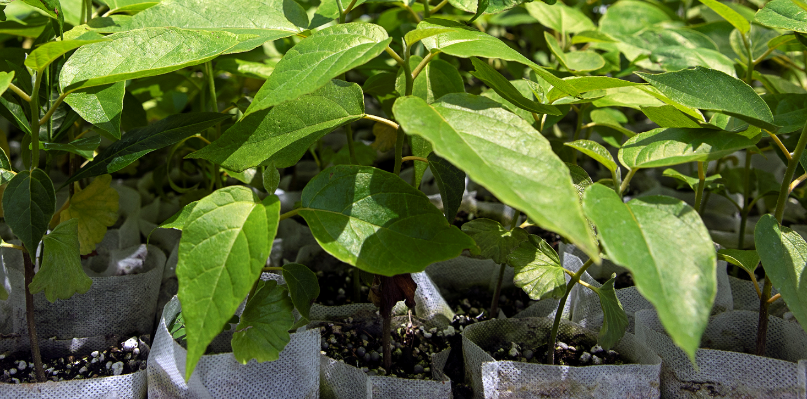
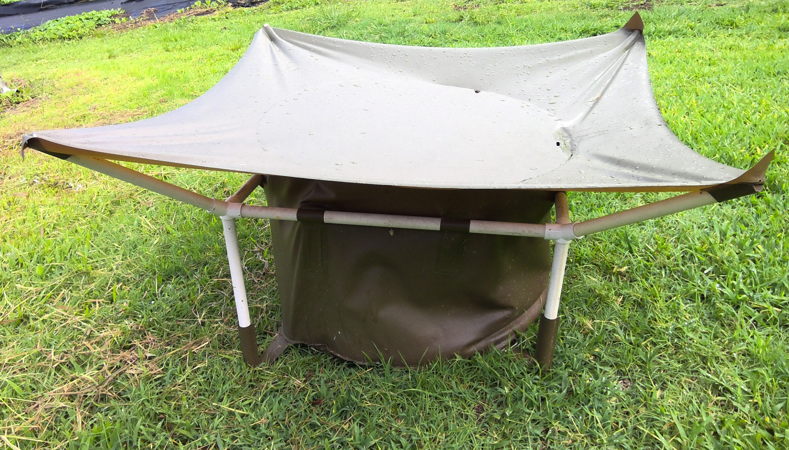
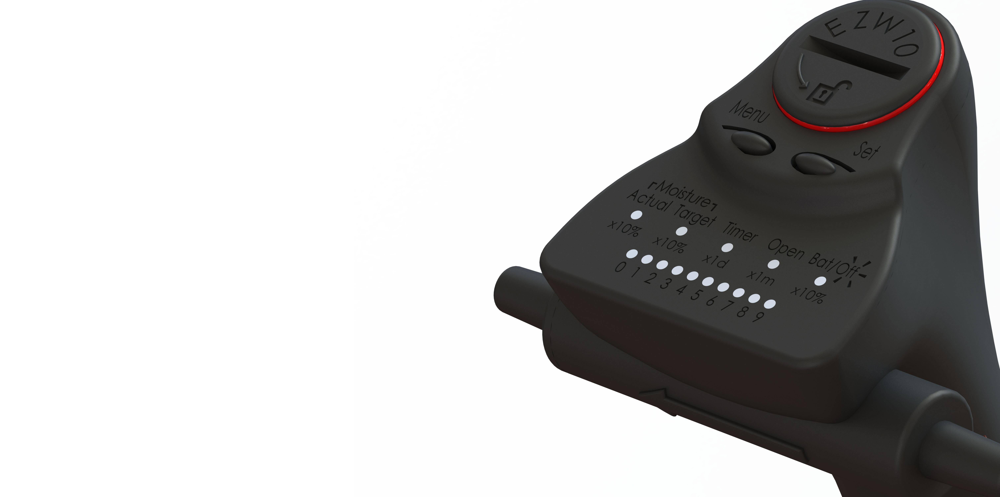
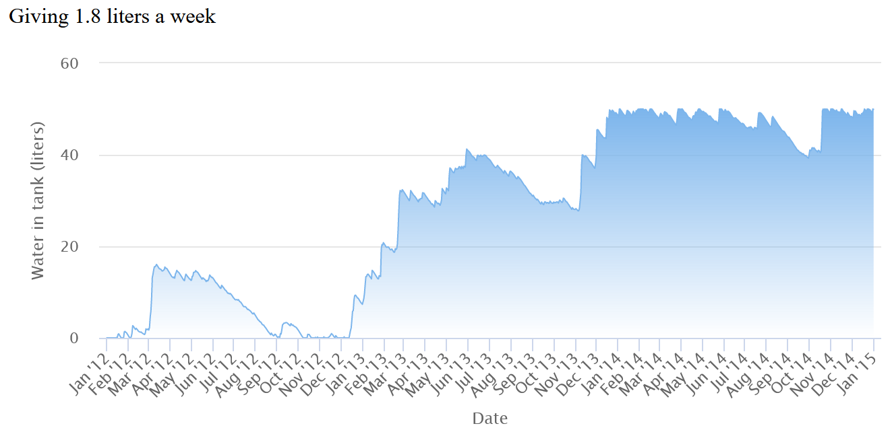

Resources
Tools, methods and codes developed by the Mora lab
 |
The Carbon Neutrality Challenge Interactive tool to calculate how many native trees you need to plant to offset your carbon emissions. URL |
|  | Mora’s sheet Pot Development of a pot system to increase seedling quality. URL |
 |
Mora’s tray Tray to improve the quality of life of seedlings at the nursery. URL |
|  | RainCatcher Affordable and re-usable device to collect rainwater for irrigation of individual trees. URL |
 |
KOA threshind machine Machine developed for the purpose of threshing thousands of koa seeds in a few minutes. URL |
|  | EZW10 Easy Watering 10 Electronic irrigation system that allows to customize irrigation programs for individual trees. URL |
|  | RainWater catchment calculator Using daily rain data for any given location, the area of your catchment and your water demands, this app determines if your rain catchment will go dry. URL |
 |
Tree CO2 sequestration calculator Using several published equations, this app estimates the amount of atmospheric CO2 that can be taken and stored by a tree over its life time. URL |
| Financial algos Compilation of algorithms for assessment of financial markets. URL |